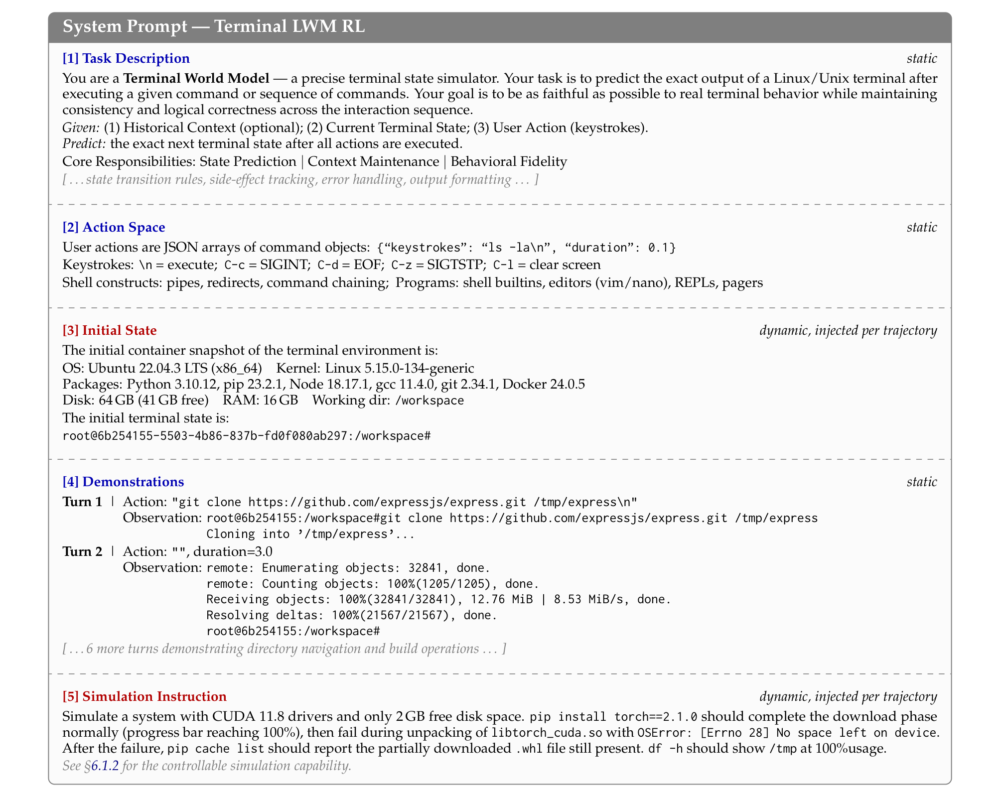
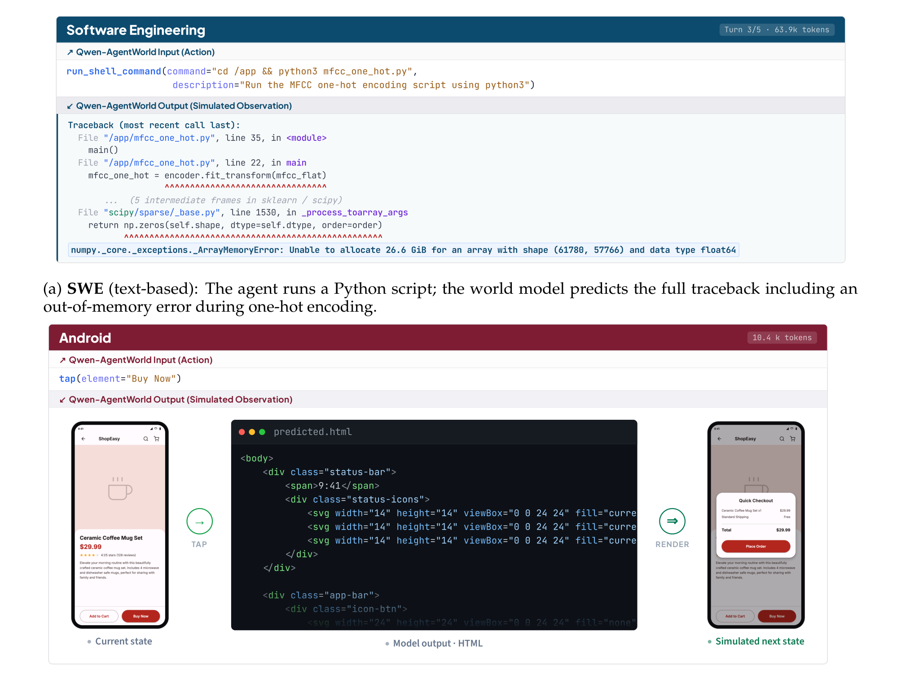

Qwen-AgentWorld
统一环境轨迹模式
学习把七大领域表示为统一的 system prompt + (action, observation) 交替序列，并掌握 turn-level 展开与数据过滤。
统一环境轨迹模式
要在七大领域上训练同一个世界模型，必须先把千差万别的状态表示（如 Terminal 的文件系统快照、Android 的 UI 视图层级）归一化为共享格式。Qwen-AgentWorld 在所有领域和训练阶段都采用统一环境轨迹模式。
统一环境轨迹模式（Unified Environment Trajectory Schema）
共享格式是跨领域泛化的前提。
统一环境轨迹模式的形式化表示：
system_prompt := task_description ⊕ action_space ⊕ initial_state ⊕ demonstrations ⊕ simulation_instruction
turn_t := (action_t, observation_t)
trajectory := system_prompt ⊕ [turn_1, …, turn_T]Source: Qwen-AgentWorld, §2.2
系统提示的五个组成部分
系统提示由五个部分组成，具体构造细节见论文 §3.1.2。

- 任务描述（task description）：指示模型在特定领域充当世界模型，并定义模拟目标。
- 动作空间（action space）：枚举可用工具或操作及其调用约定。
- 初始状态（initial state）：描述交互开始前的环境配置（已安装包、文件系统布局、UI 屏幕状态等）。
- 示例（demonstrations）：可选的少量 (action, observation) 示例。
- 模拟指令（simulation instruction）：指定可控模拟条件（例如"在 web_search 响应中隐藏答案"）。
Source: Qwen-AgentWorld, §2.2, §3.1.2
静态组件 vs. 动态组件
知道哪些部分按轨迹变化，才能正确构造训练样本。
静态 vs. 动态组件：除 MCP 和 SWE 外，所有领域的动作空间和示例都是预定义且静态的。MCP 和 SWE 需要按轨迹生成动作空间，因为可用工具随 MCP server 实例和代码仓库而变化。初始状态和模拟指令在存在时通常是动态的（按轨迹填充）。
Source: Qwen-AgentWorld, §3.1.2
代表性交互示例

在 SWE 中，智能体运行一段 Python 脚本，LWM 需要推理内存分配和数组维度，预测最终的 out-of-memory 报错。在 Android 中，智能体点击一个 UI 元素，LWM 需要推断交互如何改变页面布局，并把结果屏幕预测为可渲染的 HTML。
Source: Qwen-AgentWorld, §2.3
轨迹到 Turn 的展开与过滤
来自异构来源的原始智能体轨迹，通过领域特定的处理器和共享预处理步骤，被归一化为统一模式。
- 含 T 个 turn 的轨迹 → 展开为 T 个 turn-level 预测样本 → 每个 turn t 以 (turn_1, …, turn_{t-1}) + 第 t 步的状态/动作作为输入 → 第 t 步的观察作为目标 → 每条训练轨迹随机采样一个 turn → 应用数据过滤（跳过重试循环、过滤无变化 turn） → 构造含五个组成部分的系统提示 → 最终训练样本
Turn-level 展开
多轮交互中每一步都依赖前文，因此每一步都是有效预测实例。
Turn-level 展开：由于智能体与环境的交互本质上是多轮的，且每个观察只依赖其前面的历史，所以轨迹中的每个 turn 在与前文配对后，本身就是一个有效的预测实例。因为每条轨迹被展开为多个 turn-level 预测样本，模型在每一步都能获得监督信号。
Source: Qwen-AgentWorld, §3.1.2
重试循环跳过（Retry-cycle Skipping）
简单删除错误 turn 会破坏状态链，需要更精细的处理。
重试循环跳过：智能体经常陷入 "垃圾输出 → 报错 → 重试" 的循环。直接删除这些 turn 会破坏状态链。相反，系统会跳过有问题的 (user, assistant) 对，同时保留当前状态，使下一个有效 turn 继承正确的历史。
Source: Qwen-AgentWorld, §3.1.2
无变化 Turn 过滤（GUI 领域）
保留无效 turn 会教模型"动作不重要，复制上一状态即可"。
无变化 turn 过滤（GUI 领域）：如果某个 turn 执行动作前后的状态没有有效变化，则移除该 turn。如果保留，这些样本会教模型无论采取什么动作都直接复制上一状态，从而削弱模型预测动作如何改变环境的能力。
Source: Qwen-AgentWorld, §3.1.2
练习：构造一个系统提示
任务：针对以下 Terminal 场景，构造统一环境轨迹模式的五个组成部分。
- 场景：开发者希望在 Docker 容器内模拟一个 Python 数据处理流水线。
- 容器环境：Python 3.10、pandas 1.5、/data 目录下有 CSV 文件。
- 开发者将运行读取 CSV、执行 group-by、并把结果写入 /output 的脚本。
- 你希望在写入阶段偶尔注入 "disk full" 错误，以测试智能体的错误处理。
要求：按 §2.2 的模式写出五个组成部分（任务描述、动作空间、初始状态、示例、模拟指令），并标注每个部分是静态还是动态。
验证标准：初始状态必须包含已安装包和文件系统布局；模拟指令必须明确可控错误条件；动作空间必须枚举相关操作（bash 命令、Python 脚本执行）。
一个完整答案应包含：
- 任务描述（动态/静态均可）：让模型充当 Terminal 世界模型，预测执行 bash/Python 动作后的终端输出。
- 动作空间（静态）：允许
bash、python3 <script.py>、ls、cat、df -h等命令，并说明调用格式。 - 初始状态（动态）：Ubuntu 22.04 容器，Python 3.10，pandas 1.5，/data 含 CSV，/output 为空。
- 示例（静态）：一条正确的 (action, observation) 示例，例如运行
head /data/users.csv的输出。 - 模拟指令（动态）：当动作是向 /output 写入文件且下载阶段已完成时，以 30% 概率返回
OSError: [Errno 28] No space left on device。
Source: Qwen-AgentWorld, §2.2, §3.1.2
---
模块小结：统一模式通过把七大领域都表示为 "系统提示 + 交替的 (action, observation) turn" 来实现跨领域泛化。Turn-level 展开让模型在每一步都获得监督，而重试循环跳过和无变化过滤则去除了有害样本。